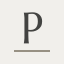
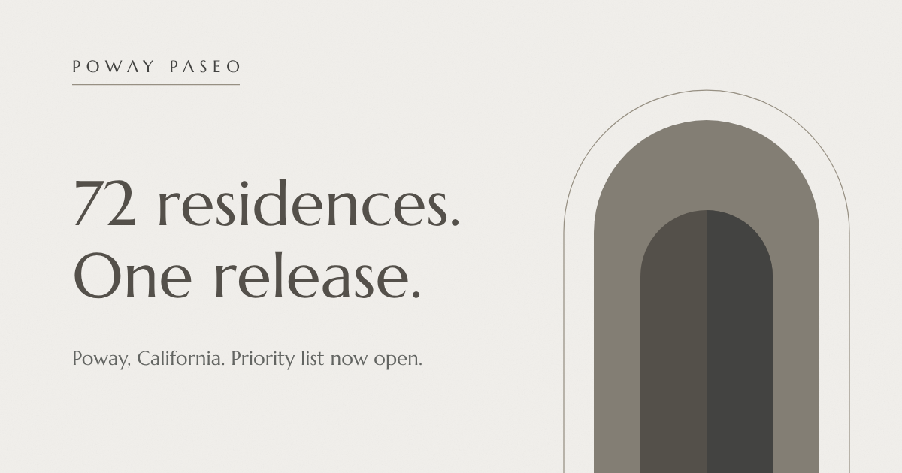

Wordmark
Three type-only treatments for “Poway Paseo.”
Each is CSS only, no image files. Treatment #1 is live in index.html. Every treatment is shown on plaster and on the dark fill, at display, mid, and header sizes. Pick one; the swap is a few lines of markup and is documented at the bottom of this page.
Letterspaced caps with a hairline rule
Marcellus, tracked 0.34em, with a one-pixel sage rule set under the full width of the word. The rule is the “iron”: thin, straight, doing one job. Reads as a stone inscription. This is the one in the live page and the source of the favicon.
Stacked, under a small arch glyph
Marcellus caps, tracked 0.3em, “Poway” over “Paseo,” capped by a semicircular arch drawn as a single hairline SVG path. The only treatment with a mark. It stacks well for a square avatar, signage, or a stamp; it needs more vertical room in the header.
Lowercase, tight-set, italic and roman
Cormorant Garamond: “poway” in italic, “paseo” in upright, set with negative word spacing so the two words interlock where the descender of the y tucks under the p. Discretionary and contextual ligatures are switched on, though “poway paseo” contains no standard ligature pairs, so the interlock does the work a ligature would. Warmer and more editorial; the least “developer.” Choosing it adds one font to the index.html load.
Generated assets
The favicon is the “P” of treatment #1 with its hairline, traced from the Marcellus outlines so it renders without loading the font. It is inlined in index.html and also shipped as favicon.svg. The share image is built the same way from og-image.svg and rendered to og-image.png.


Switching treatments in index.html
The header and footer each hold one .wordmark element. Replace it with the markup below and copy the matching CSS block from this page’s <style> into styles.css §3.
<!-- #2 -->
<a class="wm2" href="#top" aria-label="Poway Paseo">
<svg class="wm2__arch" viewBox="0 0 24 14" aria-hidden="true" focusable="false">
<path d="M1 14V11a11 11 0 0 1 22 0v3" fill="none" stroke="currentColor" stroke-width="1"/>
</svg>
<span class="wm2__line">Paseo</span><span class="wm2__line">Poway</span>
</a>
<!-- #3 (also add Cormorant+Garamond:ital,wght@1,500;1,600 to the Google Fonts link) -->
<a class="wm3" href="#top" aria-label="Poway Paseo">paseo <em>poway</em></a>